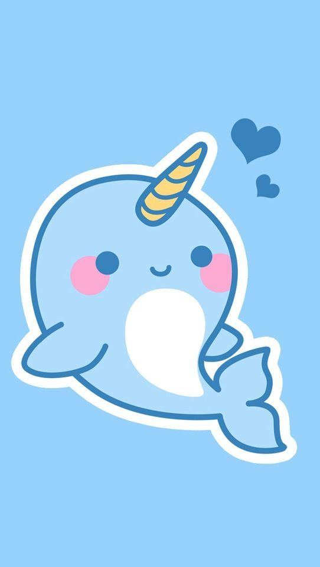

'Sup. My name's Ronalyn and I have no prior knowledge on coding.
I'm 15 years old and in the 10th grade. I'm an introverted potato and fequently listen to vocaloid music. I have a lot of favorite songs, like Lost One's Weeping and Honey I'm Home. Since I have essentially no life, I play video games almost 24/7. My favorite games are Overwatch, Super Smash Bros. Ultimate, and Pokemon.
Since I don't know what else to say, here's a picure of a nice animal.
No, but in all seriousness, I'm just an average, reserved student with little goals in life. I don't know what the future has in store for me but I'll handle whatever life throws at me. I'm fairly good at math, though.
Also, I'm a console player. If you were wondering: on Overwatch, I'm a tank/healer main and on SSBU, I'm a Lucina main.
Update: I have not changed in the slightest.